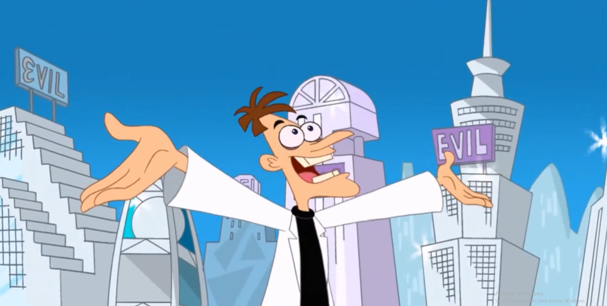

Doofania, una ciudad comoda y segura para aquellos villanos y malvados con sus planes malignos. una ciudad resguardada con un ejercito de robots anti agentes secretos y super heroes, ubicada en el limitrofe de la costa oestes, con clima calido y humedo con viento fresco de la costa acompañado de unas vistas maravillosas al mar. dado que la ciudad esta expecificamente echa para malvados, cuenta con instalaciones de centros de investigacion e frabricas para desarrollar sus planes malvados, calles limpias, seguras y sin trafico o ferias, para que puedas trabajar y dormir tranquilamente en tus planes malvados, ademas la ciudad cuenta con unos centros turisticos y actividades de entrenimiento unicas en el mundo como: dia de la ciencia, ballonys park, museo-inador, la casa Doofania, etc.... como si todo esto no fuera suficiente, doofania es la unica ciudad flotante en el mundo, un milagro de la ingenieria moderna.